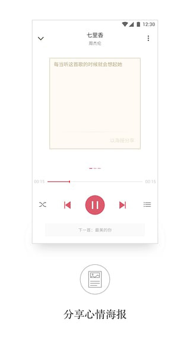
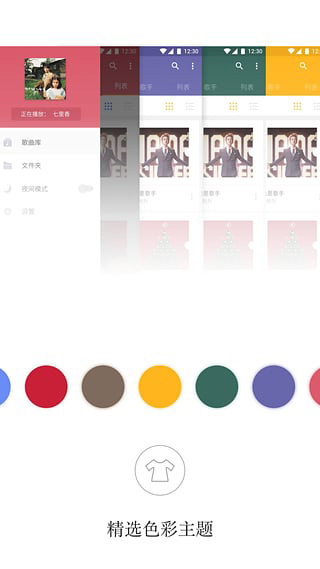

APlayer 从入门到上手：5 分钟把音乐播放器嵌进你的网页
第一次接触网页音乐播放器？APlayer 是最轻量、文档最友好的选择。本文带你从零开始，从引入文件到跑通第一个播放列表，再到学会最实用的三个功能点。
这篇能带你从完全不懂到用起来，而且不需要任何前端基础——连 HTML 是什么都不知道也没关系，跟着步骤走就能把 APlayer 跑起来。
它到底是干嘛的？一个生活化类比讲明白
想象一下：你自己做了一个个人博客，想在侧边栏放一个背景音乐。如果只贴一个 <audio> 标签，出来的是浏览器原生播放器，长相粗糙，没有歌词，也不能点下一首。APlayer 就是给网页做的「专业音乐播放器皮肤 + 播放管理引擎」——它帮你把一堆音乐文件排成歌单、显示封面、滚动歌词、循环或随机播放，而且长得还挺好看。它的官网上有完整的产品介绍和演示，先去感受一下它的界面风格也挺好。
你不需要安装任何软件，也不需要编译。整个 APlayer 就是两个文件：一个 JS 一个 CSS，加起来压缩后不到 70KB，比一张中等分辨率的手机照片还小。把它们丢进网页就能用。
五分钟上手：从引入到第一次跑通
好，我们开始。全程只需要三步，复制粘贴就行。
第一步：引入文件
在你的 HTML 页面的 <head> 标签里加上一行 CSS 引入，在 </body> 前加上 JS 引入。文件从官方下载拿——APlayer.min.css 和 APlayer.min.js 两个文件，放到你网站的静态资源目录里。
<link rel="stylesheet" href="APlayer.min.css">
<!-- ... 页面其他内容 ... -->
<script src="APlayer.min.js"></script>第二步：放一个容器
在你想让播放器出现的地方，写一个空的 <div>，给它起个 id：
<div id="aplayer"></div>第三步：初始化播放器
在 JS 引入之后，写一段初始化代码。最小可用版本长这样：
const ap = new APlayer({
container: document.getElementById('aplayer'),
audio: [
{
name: '歌曲名',
artist: '艺术家',
url: 'music/song1.mp3',
cover: 'music/cover1.jpg'
},
{
name: '第二首',
artist: '还是那个艺术家',
url: 'music/song2.mp3',
cover: 'music/cover2.jpg'
}
]
});保存，用浏览器打开你的页面——一个带封面、带播放列表、可以点播放的播放器就出现了。恭喜你，APlayer 跑通了。

上手后先玩这三个功能
跑通之后别急着堆功能。新手最值得先碰的三个点：歌词、三种显示形态、动态切歌。这三个搞明白，其他参数看一眼APlayer文档就懂。
功能一：加滚动歌词
每首歌都可以传一个 lrc 字段，值可以是 LRC 文件的 URL，也可以直接把 LRC 格式的字符串写进去。LRC 格式就是每行以时间戳开头的纯文本，比如：
[00:15.00]第一句歌词
[00:20.50]第二句歌词有了这个，播放时歌词会逐行高亮并自动滚动到可视区域。你会发现这是 APlayer 最「酷」的功能之一，也是同类播放器里原生支持的少数派——Plyr 和 Video.js 都要靠插件。
功能二：切换显示形态
APlayer 原生支持三种外观：
- 正常模式：完整展示封面、控件、歌词、列表，适合放在文章页或独立页面。
- 吸底模式：固定在页面底部，只保留一行精简控件，适合长页面想让背景音乐一直响着的场景。设置
fixed: true就行。 - 迷你模式：更紧凑，只显示封面缩略图和进度条，适合侧边栏小挂件。设置
mini: true。

三种形态不需要额外引入任何 CSS，改一个参数就自动切换。这也是 APlayer 相比其他播放器省心的地方。
功能三：动态切歌与列表管理
播放器实例 ap 上有一个 ap.list 命名空间，专门管理歌单。你可以随时往列表里加歌、删歌、切歌：
// 往末尾加一首新歌
ap.list.add({ name: '新歌', artist: '某人', url: 'new.mp3', cover: 'new.jpg' });
// 直接跳到第 3 首（下标从 0 开始，所以是 index 2）
ap.list.switch(2);
// 按下标移除一首歌
ap.list.remove(0);
// 清空整个播放列表
ap.list.clear();添加、移除、切换都会触发对应的事件（listadd、listremove、listswitch），你可以在这些事件里做自己的逻辑，比如加一首就往日志里写一条。
小白的三个常见疑问
为什么手机上打开页面不自动播放？
移动端浏览器（iOS Safari、Android Chrome、微信内置浏览器）全部默认禁止无用户交互的音频自动播放。这是浏览器层面的硬性策略，不是 APlayer 的 bug。
可行的思路有三个：监听页面第一次点击或触摸，在回调里调用 ap.play()；在播放器旁边放一个显眼的「点击开始播放」按钮；或者初始静音 + 首次交互取消静音。微信内置浏览器尤其严格，几乎禁止一切自动播放，面向微信用户的页面最好直接让用户自己点。
主题色能换吗？每首歌用不同颜色行不行？
当然可以。全局设置一个 theme 参数，播放器的进度条、音量条、列表标记色都会跟着变。更酷的是——你可以为每首歌单独设置 theme，切歌时主题色自动切换。运行时也能通过 ap.theme('#FF0000') 动态改当前歌曲的主题色。这些用法在 APlayer 文档的主题色 API 章节里有完整示例。
能播放 m3u8 直播流吗？
APlayer 本身不直接支持 HLS（m3u8），但可以配合 hls.js 实现。初始化时传入一个 customAudio 或类似的扩展配置就能接住直播流。不过对新手来说，先把 MP3/WAV 这些浏览器原生支持的格式跑通再说，HLS 是进阶玩法。
小结
APlayer 是目前最轻量、API 设计最干净的网页音乐播放器。20KB 左右的 gzip 体积、原生支持播放列表和 LRC 歌词、三种显示形态一键切换，这些放在一起让它在「只想把音乐播好、不想折腾视频播放器冗余逻辑」这个场景下几乎没有对手。
进阶方向：把 APlayer 放进项目里和 MetingJS 配合，可以直接接入网易云等音乐平台自动生成歌单；或者配合 Vue/React 组件化集成到 SPA 项目里。完整的项目仓库我分别推到了 GitHub、Gitee 和 GitCode，国内外访问都方便。